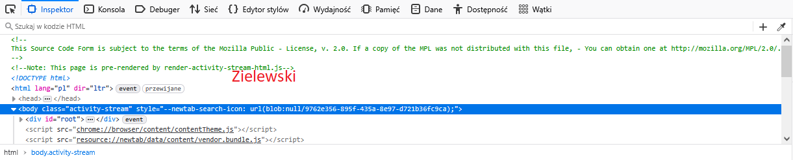
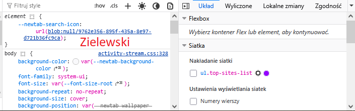

<!DOCTYPE html> <html lang="pl"> <head> <meta charset="UTF-8"> <title>Zadanie 53</title> </head> <body> <p></p><br> <p></p><br> <b><p>1.)Do czego służy Pasek dewelopera, kiedy jest gotowy do użycia, wymień zakładki Paska developera</p></b><br> <p>Pasek dewelopera Web Developer Tools (DevTools) Jest do dyspozycji użytkownika po zainstalowaniu przeglądarki. <br>To cały zestaw narzędzi, który zawiera wiele zakładek, m.in.: <br>Elements / Inspector ← (to ten Inspektor opis patrz poniżej) <br>Console (błędy i logi JavaScript) <br>Network (ruch sieciowy) <br>Sources (debugowanie kodu) <br>Application / Storage (cookies, localStorage itd.)</p> <br><br> <b><p>2.)Do czego służy Inspektor Elements, w jakiej zakładce się znajduje, do czego służy?</p></b> <br> <p>Inspektor Elements [zakładka] to podstawowe narzędzie do edycji wbudowane w przeglądarkę np. Firefox. <br>Służy głównie do: <br>podglądu struktury HTML strony <br>edycji HTML i CSS „na żywo” <br>sprawdzania stylów (kolory, marginesy, fonty) <br>zaznaczania elementów na stronie</p> </body> </html> <!-- Zielewski Z53_html -->